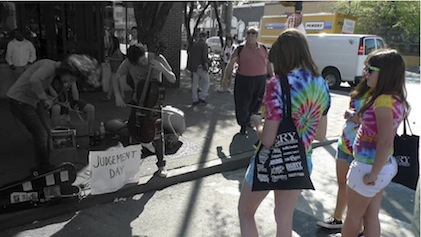

SXSW: A First-Timer's Impressions
It was with a feeling of heightened anticipation that we arrived into Austin on Wednesday the 17th March after a long drive down from Dallas. Of the two big festivals that take over the city each year, South By Southwest (Austin City Limits being the other) is the larger, with an estimated 120, 000 people descending upon this oasis of liberalism in Republican Texas. 'South By' or SXSW as it is known the world over is the place to be seen for anyone connected to music, be it through employment within the industry and its myriad labels, PRs, A&Rs and marketing people, or alternatively, for Joe Public to soak up the buzzing atmosphere and indulge his or her ardent passion by cramming in as many free shows and parties as possible. It's just as likely you'll catch that hot next-big-thing playing a Pizza joint at four in the afternoon as it is to see an intimate set by your own personal favourites who just so happen to be in town showcasing a new record.
All that and much more is possible in a city that boasts the highest number of music venues anywhere in the world, although over the course of the week that number may expand further to include abandoned parking lots and squatted co-ops, restaurants, museums, parks and street corners. Many of these areas are affiliated with the festival's official arm; it is possible to purchase rather exorbitant 'badges' for three-hundred dollars or so which act as a super-pass, allowing the holder to queue jump and virtually guarantee entry to any event they choose, as well as the numerous lectures and debates that take place concurrently with the live shows. Many more however, are unofficial, a by-product of the success and reputation of this festival built up over the last twenty years. Any act who can find a spot can set up and play, although the degree of illegality involved will naturally determine how long they last. There are also numerous free-to-all events such as the popular 'Mess With Texas' on the east side of Downtown that have worthwhile line-ups and the open, friendly vibe of a small self-contained festival. And if upwards of forty gigs each day isn't enough to be getting on with, there is also a film and interactive arm of the festival although I didn’t get time to investigate this any further given the sheer volume of things to do and places to be. In fact, the endless events, parties and promotions can become a little overwhelming. As I was in town with a group of friends we decided to just go with the flow and make group decisions, putting up with any inevitable compromises, keeping our eyes open for posters and listening to word of mouth. This turned out to be the most enjoyable way to approach what was a vastly enjoyable weekend.
Thursday:
With blue skies overhead and bright sunshine streaming down upon the Austin skyline, our little party made it's way into the centre of town for what was to be the first of many musical experiences over the following few days. The heart of SXSW is undoubtedly arranged around the infamous 6th Street, a bustling, lively place rammed with bar after venue after bar. Pretty much all of them have bands playing. Of the many streets that cross it, most contain yet more venues. With this central area closed to traffic for the festival's duration, the scene before us resembled some sort of hipster street party: cool cats sporting the regulation checked-shirt-and-beard combo hung around in groups, whilst beautiful girls in summer dresses with flowers in their hair cycled past on their Pashley-esque rides. It was like walking into some sort of twenty-something utopia, that whilst reeking slightly of pretension managed to retain a friendly and inclusive vibe. Red River St, another well-known street for music, crosses 6th just before the main highway and it was eastwards down the hill we ventured first, past Emo's and Club Deville, to the outdoor stage at Mohawk, set to play host to soul/funk favourites Sharon Jones & the Dap Kings and the Leaf Labels's new Danish upstarts Oh No Ono. After a short wait we were ushered in to the rapidly filling space to soak up the sunshine with our first beers of the day.
Onstage and midway through their set were Bowerbirds from Carolina who's brand of delicately impassioned Americana was well-received, but its clear the majority of the attendees are here for Miss Sharon Jones. With a career spanning over fifteen years including stints on XX label and collaborations with Rufus Wainwright and They Might Be Giants, the charismatic Ms. Jones and her band of slick funkateers the Dap Kings generated buzz of excitement around the venue. With a solid reputation for getting the party started, it came as no surprise that their set got people smiling and rejoicing in the perfection of what they were witnessing.

Playing songs from their new album I Learned the Hard Way, Jones worked both stage like only a seasoned professional can; dancing, strutting and wailing her lungs out as the Kings laid down tight and melodic grooves. One lucky gentleman even got to spend a few minutes being serenaded by Jones onstage, which induced much hilarity. A flawless performance then, that produced many happy faces as the place emptied out. As Oh No Ono's scheduled appearance failed to materialise, we took to the streets.
On the corner of 6th and San Jacinto, we were stopped in our tracks by the self-proclaimed 'string-metal' of San Franciscan's Judgement Day. Brothers Anton and Lewis Patzner put on a passionate and energetic display of their cello and violin-led riffing, hair and broken strings aplenty. Quickly drawing an intrigued crowd of onlookers, the ensemble, completed by a drummer thrashing away on an upturned bucket impressed us greatly. I promptly purchased a CD. Niche it may be but this was thrillingly different and thus comes heartily recommended.

Wandering up the North end of 6th, we stopped to take in the motley band of washboard-toting bumpkins going by the name Spirit Family Reunion. The band jigged and marched their way through several numbers of rootsy, impassioned alt.bluegrass and despite being based in Brooklyn, certainly looked like they'd spent more than a few days caught up in the late-19th century goldrush. Raw but not too raged, it was another breath of fresh air.
Moving out of the city centre as the day wore on, we wandered down to the larger Audotorium Shores Stage, situated on the river with the Austin skyline rising magnificently behind it. Open to the public, this arena proved popular with locals and featured a diverse range of headliners over the weekend - Cheap Trick on Friday and She & Him on Saturday. Before tonight's headliners could take the stage, Argentina's Bajofundo provided some South American flavour with their pumping tango-house, driven by a full live band. They warmed-up those present nicely for the evening's closing act, Los Angeles latin crossover merchants, Ozomatli.
Having been around for fifteen years now, the grammy-award winning band are approaching veteran status. Despite the encroaching years, they remain highly regarded for their energetic live show, if not for their recordings which have become steadily blander, as tonight’s display proved. It's clear they still know how to raise the tempo but with their sound moving further and further away from the head-nodding beats of their debut to a thinly-veiled attempt at mainstream success via the dire new single It's Only Paper, we were slightly embarrassed for them and had to leave, judging them a spent force.
As in the daytime, in the evening there are so many things going on here that it's impossible to please everyone, especially with an eight-strong group in tow. In a slightly confused state we somehow we ended up stumbling into the British Music Embassy where posters proclaimed BBC Radio 1Extra DJ Ras Kwame was hosting a showcase. Unfortunately we were too late for the bands and poor old Ras was rather dejectedly attempting to spin some records to the bar staff. Taking it upon ourselves to start the party our number rocked in and stepped things up a notch, whirling and spinning around all over the place until Ras responded by pulling out some grubby basslines and busy broken beats to get us moving. A special mention must go to his manager Damian who elegantly demonstrated the quintessential 'Migraine Skank'.
Friday:
It’s not just bands you can see at SXSW. There is now an official Film and Interactive arm to the proceedings, though I have no idea quite what they entailed; just getting to see a few bands on our rough hitlist was taxing enough. The one thing that caught all our eyes though was the 24th annual Flatstock. This music-poster convention is something of an institution in the States. A meeting of likeminded artists from all over the world, Flatstock plays host to those producing screenprinted art posters for gigs, events and promotions. With the cream of today's poster-artists setting up in one large exhibition space and absolutely everything for sale, it was nothing short of a fantastically visceral experience.
Before taking in the psychedelic delights of, amongst others, Firehouse's legendary Chuck Sperry, we had been hanging out up at the achingly hip Urban Outfitters store on The Drag to catch a little of their 'Drugs Roll and Sex Rock' three-day showcase. Sub Pop's Happy Birthday looked the part but massively aping Dinosaur Jr. and becoming progressively more average is no way to keep anyone's attention. One couldn't help but notice the striking Dum Dum Girls hanging around waiting to play next, garnering admiring glances from most every male present. I can't comment on whether or not their music lived up to their looks because we had to make a sharp exit to get down to BD Riley's back on 6th for a highly anticipated set by the frankly thunderous Belfast boys And So I Watch You From Afar.
When we arrived, compatriots Minutes were rocking out the last few numbers of their highly charged set. Despite plenty of spunk and some red-raw dynamics the band were ultimately striving for more than they were able to produce, given their singer had just about lost his voice. That said, I'd like to hear their debut album Marcata, apparently out in the summer. After a swift change-over the four young horsemen of ASIWYFA took the stage. It was immediately clear things were about to shift up a gear. Having seen the band almost upstage headliners Oceansize at a recent sold-out show at London's Heaven, I was expecting good things. It's fair to say that in terms of sheer guts and visceral rock thrills this band do not disappoint. With the majority of their short set taken from newly-released Letters EP, the band delight in quite literally throwing themselves into each and every note as the sweat flies in all directions. Judging by the large number of onlookers crowded on the street outside it seems they made an impression on America too. I can't recommend the experience highly enough, go and see them next time they play your town.
As day turned into night things became rather surreal. Taking a taxi out east of Downtown we were looking for the Ninja Tune 20th Anniversary gig at The Independent. Hearing music floating from down a darkened alley we followed our noses bursting into the wonderful corporate-free festival vibes of Mess With Texas. Billed as the anti-SXSW, this free event plays out every year with large crowds and some fantastic performers to boot. As it turned out we had wandered right into the middle of the comeback set by the John Peel approved, sci-fi obsessed surf-punks Man Or Astroman. Having heard the band in name alone, I was none the wiser but their high octane performance and penchant for theatrics drew an admirable crowd of fans and as such turned out to be highly entertaining surprise.
Coldcut's Ninja Tune label has been a consistently strong presence in music for a long while, some twenty years this year in fact. Having released definitive records by artists such as The Cinematic Orchestra, Roots Manuva and Jaga Jazzist to name but a few, their anniversary show was top of our list for the evening. Unfortunately the musical treats on offer were rather below par for a celebration of such magnitude. Poirier and MC Zulu got things off to an eclectic start with some rattling dubstep and dirty electro over which Zulu's hyped-up ramblings hit some kind of spot. A rather fantastic junglist take on the massive Major Lazer hit of last year Pon De Floor went down a storm.
After such wanton dancefloor-led vibes, it was an unusual choice then to put LA's moody experimental hip-hop quartet Antipop Consortium. Although their live show was fascinating to watch and got plenty of heads nodding in appreciation, it was clearly too abrupt a change of atmosphere for many present. The group's entirely live beat-making and subsequent manipulation of said beats into a throbbing monster of a tune that each member could step back and rap over in turn was at times hypnotic. However, moving from Poirier's cutting-edge dancefloor shakers to the dark and paranoid world of the APC caused many to up and leave. If they'd stayed on to see headliner Daedalus play what sounded like a semi-ironic attempt at hard house I can't truly say it would have been worthwhile.
Saturday:
Feeling rather broken by the time Saturday came around, we only had one thing on the agenda: get to the free gig by the reformed New York post-hardcore veterans Rival Schools. Things took on a slightly surreal atmosphere as we traveled across town to a quiet suburban area East of town and found the venue, possibly the best named taco shop in the world, Juan In A Million, with a small queue of people waiting outside. Being good old Brits we joined the line only to discover that everyone was in fact queuing for tacos and not for band. Of course! Killing time we wandered the neighbourhood where several industrious types were hosting free parties on their front lawns; one group of teens had amps and drums all set up and were rocking out on their own to anyone who walked by (which wasn't many) whilst another group featured a man preaching on his porch to a small crowd of assembled onlookers. There was something intrinsically satisfying about it all.
The band themselves turned out to be playing under cover in the tiny yard of the taco shop. It was all set up and sponsored by AOL who were streaming the whole thing live. Consequently you were handed free beers and tacos when you walked in and free posters and t-shirts when you left. The amount of money they must have spent to put on what was essentially a forty minute set played to 60 people didn't bear thinking about, but, the main thing was that Rival Schools themselves were there. With an air of excitement only such an intimate gig can create, all present were ready to hear some United By Fate classics and the forthcoming new material.
Despite looking a little tired, the band didn't disappoint. Playing all the best songs from UBF as well as a number of new songs from their forthcoming second album, they got the crowd singing in minutes. The chance to see a band of such prominence up close and personal and in such a bizarre location was a definite highlight, and the fact it was free made it all the sweeter. If one was ever to be drawn up, Walter Schreifels would probably top a list of the most amiable frontmen ever. With his self-deprecating asides into which he worked a tenuous link to the next song, you can't help but warm to the man. He also has a solo album out soon on Big Scary Monsters and I’ve heard very good things.
On the way back into town we heard some sort of spazzed-out, prog-jazz metal blaring from across the road and, intrigued, wandered over to investigate. Set up in a small parking lot were two makeshift stages and a big PA and facing each other on the concrete were the members of Zorch, an Austin band who make quirkily experimental noise-pop. They turned out to be a great little find. The music doesn't really have vocals as such, but uses each members voice as an instrument, distorted and stretched through various electronic gadgets. Big warm keyboards and some strangely intricate drumming led us to pick up a CD, pleased with our find.
And this, in essence was the beauty of the whole event. Discovering music, people and art that you've never heard before, led by your ears into unfamiliar locations. If it's not to your taste, you can leave and walk five minutes and find something else. The sheer scale of what this event has become is admittedly quite overwhelming, but if you take a deep breath, stay open to everything and wander around I think it would be impossible not have a good time. You also don't need an expensive 'badge'. I don't think we paid to get into anything over the whole time we were there. Heavily sponsored then yes, but between the exclusive showcases and the ramshackle street-gigs there is something for everyone. Despite the sponsorship and the industry presence, the big names and the queues, what I learned at South By Southwest is that the spirit of independent music is still very much alive. Many of the bands drove for days across the country to get to play a few small shows, not knowing if anyone would show up. The fact they are still doing it is mightily inspiring and should serve as a lesson to all aspirants: just get out there and play your music.
25 May, 2010 - 18:32 — Jody White